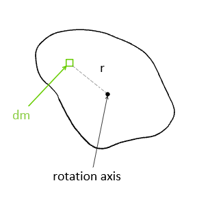
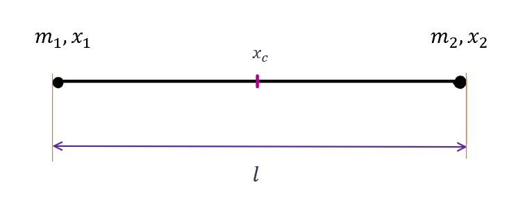
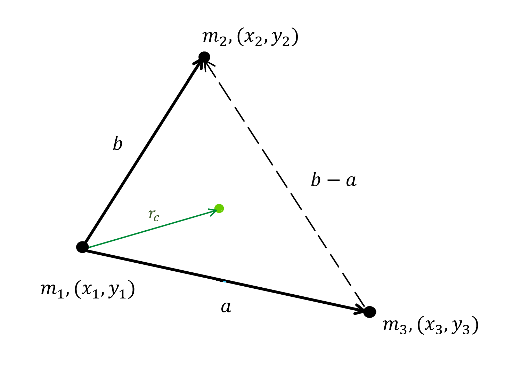
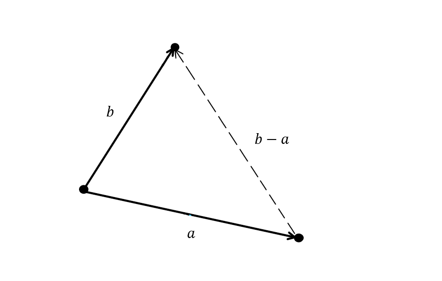
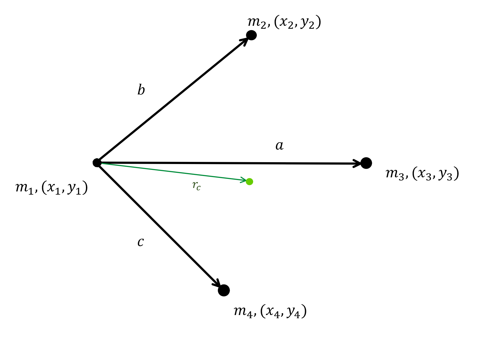
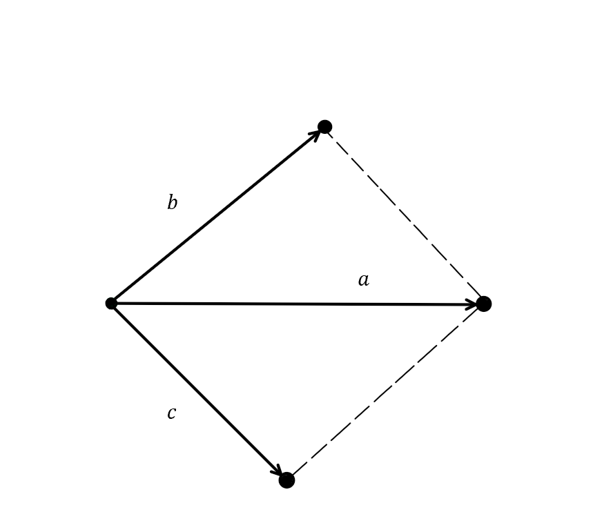

Center of Mass and Mass Moment of Inertia of Particles (Polygonal)
Sarah Sabrina Binti Shaharudin 1
1 University of Applied Sciences, Dortmund, Germany
June 2020
Keywords: microjam, mec-2, Studienarbeit,
Abstract
In this research project, we will conduct a theory, in which mass moment of inertia of identical point masses is equal to the moment of inertia of its corresponding shape (in this case simple polygons). The centroid of the point masses is a point that corresponds to the center of gravity of a very thin homogeneous plate of the same area and shape. When the sum of n point masses, ma including the concentrated mass at its center, mc is equal to the mass M of the corresponding object, we are able to determine and see the trend of mass distribution of these point masses in a system of particles.
Mathematically, it can be written as
∑MParticles=n⋅ma+mc=M(1.1)
1 Introduction
1.1 Center of Mass
The center of mass is the unique point at the center of a distribution of mass in space that has the property that the weighted position vectors relative to this point sum to zero. Simply saying, it is the average position of all the parts of the system. For simple rigid objects with uniform density, the center of mass, rc is located at the centroid. Informally, it is the point at which a cutout of the shape could be perfectly balanced on the tip of a pin.
A weighted position vector, r is a vector which points from the origin to an object and has magnitude m, where m is the mass of the object. For a system of n objects, the center of mass is the point where
i=1∑nmi⋅ri=0
where mi are the point masses in a system of particles with coordinates ri.
The sum of vectors for the total mass will point us to the center of mass. Mathematically, it is given as
rc=∑i=1nmi∑i=1nmi⋅ri(1.2)
1.2 Mass Moment of Inertia
The mass moment of inertia measures the extent to which an object resists rotational acceleration about an axis, and is the rotational analogue to mass. The larger the mass moment of inertia, the smaller the angular acceleration about that axis for a given torque.
For a point mass, the mass moment of inertia may be generally expressed as the mass m times the square of the perpendicular distance to the axis of rotation r2.
J=mr2
The moment of inertia of a composite rigid object is the sum of the moments of inertia of its component subsystems (all taken about the same axis) as follows
J=i=1∑nmiri2(1.3)
Therefore, the moment of inertia is a physical property that combines the mass and distribution of the particles around the rotation axis. Notice that rotation about different axes of the same body yield different moments of inertia.
A continuous mass system can be thought of as a collection of infinite mass particles. Thus, the moment of inertia of a distributed mass system can be written as
J=∫0Mr2dm(1.4)
where r is the vector perpendicular to the axis of rotation and extending from a point on the rotation axis to a point of the mass element dm.

Fig. 1: Moment of Inertia
Usually, the mass element dm will be expressed in terms of the geometry of the object, so that the integration can be carried out over the object as a whole (for example, over a long uniform rod).
2 Straight Line
We will start this case study using two point masses, which then be correlated with a slender, uniform rod of the same length. The rod has a mass of M which is equally distributed across the rod. The two point masses are of equal mass ma.
2.1 Centroid of 2 Point Masses

Fig. 2: Two Point Masses
For two point masses, the position vectors are located along the x-axis. Here, we take x1 as the reference point for all position vectors. Using the equation from (1.2) the position of the center of mass is given by a position vector
xc=∑i=1nmi∑i=1nmi⋅xi=m1+m2m1⋅0+m2⋅l
As stated before, the point masses have the same mass, ma:
m1=m2=ma
Thus, we have
xc=21l
2.2 Mass Moment of Inertia of 2 Point Masses
To find the mass moment of inertia, we have to determine the axis of rotation of the system. The axis of rotation is located at the center of mass of the system (here xc). Using the equation from (1.3),
J2Particles=m1⋅(21l)2+m2⋅(−21l)2=21mal2
2.3 A Uniform Rod
For a thin rod with a uniform mass density, the center of mass is at its center. Logically, the use of symmetry would tell you that the center of mass is at the geometric center of the rod without calculation.
Fig. 3: Uniform Rod
The moment of inertia for a thin, uniform rod with axis through center using the general equation from (1.4),
J=∫x2dM
where we used x as the position vector as they are located along the x-axis.
Using the linear mass density, ρ of the object, which is the mass per unit length
ρ=dxdMdM=lM=lM⋅dx
The term linear density is most often used when describing the characteristics of one-dimensional objects, although linear density can also be used to describe the density of a three-dimensional quantity along one particular dimension. Linear densities are usually used for long thin objects such as strings for musical instruments.
Now we have all the information to work out our theory, that the mass moment of inertia of two point masses equals to the mass moment of inertia of a uniform rod.
This means the mass of each point mass ma equals to one sixth of the mass of the rod, and the rest belongs to the mass concentrated at the center of the point masses.
To find the value of the concentrated mass at its center, we use the equation from (1.1)
Next, we will do calculations for three point masses with its corresponding shape, arbitrary triangle of the same size. The idea is, the center of gravity of this triangle coincides with the center of gravity of the three point masses.
3.1 Centroid of 3 Point Masses
A minimal representation of a triangle can be achieved by specifying only two side vectors a and b and running both from one common point to the other two points each. Three identical point masses are located at each vertices of the triangle with their coordinates respectively.

Fig. 4: Three Point Masses
From equation (1.2), we can define the position vector, ri in the direction of a and b which points from point mass m1. Thus, the position of the center of mass is
rc=m1+m2+m3m1⋅(00)+m2⋅(0b)+m3⋅(a0)
Considering all point masses equal to ma, we obtain
rcrc=3mama(ab)=31(a+b)=rc1
Since rc is the distance of center of mass from point mass m1,we need to find the distance to the center of mass from the other two point masses. This is relatively simple as we can easily calculate using simple vector knowledge.
rc2rc3=−b+rc=31(a−2b)=−a+rc=31(b−2a)
To verify these values, applying the definition of center of mass, the sum of all rc will result to zero.
3.2 Mass Moment of Inertia of 3 Point Masses
As we have learnt, the axis of rotation in this system of particles located at the centroid of the three point masses. Using the equation from (1.3), ri2 is defined as the square of the distance of point mass mi to the center of mass.
For an arbitrary triangle, we can apply the same two side vectors a and b with the emphasis of the area of the triangle instead of the vertices. Quoting from article [1], the area of the triangle is as follows:
The symplectic inner product a~b of both vectors corresponds to the signed area of the parallelogram spanned by them. Since the orientation from a to b is mathematically positive, so it is the area. Half of it conforms to the triangle area:
A=21a~⋅b

Fig. 5: Triangle
Here, we can assume that the planar triangle have a constant mass distribution (density) ρ and constant thickness t. As density is defined as mass divided by volume, the volume of triangle is then the area times the thickness
Planar moment of inertia describes how an area is distributed relative to a reference axis (typically the centroidal, or central, axis). Polar moment of inertia is analogous to planar moment of inertia (both denoted by the letter I) but is applicable to a cylindrical object and describes its resistance to torsion (twisting due to an applied torque). Polar moment of inertia is expressed in units of length to the fourth power m4. Polar moment of inertia can also be found by summing the x and y planar moments of inertia (Ix and Iy).
We are able to find the polar (second) moment of inertia by adopting the results of treating simple polygons by Green's theorem, using the knowledge from these articles [1,5,6]
The polar (second) moment of inertia for this triangle around the common
start point of vectors a and b is
I=121a~b(a2+ab+b2)
However, in this case, we would need to get the second moment of inertia around the center of mass or the axis of rotation. Given Steiner's theorem,
I=Ic+Ad2IcIAMoment of inertia around the center of massMoment of inertia about any other point of distanced(hererc)Area of triangle
The Steiner's Theorem, or also known as the Parallel Axis Theorem, can be used to determine the moment of inertia of a rigid body about any axis, given the body's moment of inertia about a parallel axis through the object's center of gravity and the perpendicular distance between the axes.
The moment of inertia around the centroid Ic can be written as
We learn that the mass of each point mass ma equals to one twelfth of the mass of a planar triangle, while the rest belongs to the mass concentrated at the center of the point masses.
A quadrilateral is a polygon with four edges (sides) and four vertices (corners). In this case study, we will use a scalene quadrilateral, which is a four-sided polygon that has no congruent or identical sides. We will seek the relationship between four point masses of the same mass and a planar quadrilateral of the same size as the point masses in terms of mass moment of inertia. The centroid of four point masses also coincides with the center of mass of this quadrilateral.
4.1 Centroid of 4 Point Masses
Like arbitrary triangle, we can represent a scalene quadrilateral using three side vectors a, b and c which run from one common point (point mass m1). Three other identical point masses as m1 are located at each end of the vectors with their respective coordinates.

Fig. 6: Four Point Masses
Adding the direction c as one of the position vectors ri along with a and b (all pointing from point mass m1), the position of the centroid of four point masses using equation (1.2) can be defined as
We have achieved the distance between the centroid and point mass m1. All we need now is the distance between the centroid and the rest of the point masses for further calculation of mass moment of inertia. Using simple vector knowledge results in
Applying the same concept as three point masses, the axis of rotation of four point masses is located at the centroid. Using the equation from (1.3), ri2 is defined as the square of the distance of point mass mi to the center of mass
A representation of a planar quadrilateral is the same of that in constructing four point masses.

Fig. 7: Quadrilateral
The mass moment of inertia of a quadrilateral (here we denote as IT) is obtained using a combination of two triangles. The equation with Steiner's theorem is as follows
ID1ID2Ic1,Ic2AD1,AD2dD12,dD22Moment of inertia of the first triangle formed by vectorsaandbabout pointm1Moment of inertia of the second triangle formed by vectorsaandcabout pointm1Moment of inertia of the (respectively) first/second triangle about the center ofmass of the triangleArea of first/second triangleDistance betweenm1and center of mass of first/second triangleFig. 8: Center of mass in quadrilateral
rt1 and rt2 are the center of mass of the triangles respectively (Fig. 8 is just a sketch and not accurate). dD1 and dD2 are then obtained using vector addition. Reintroducing Ic of triangle (see (1.5)) into the equation gives us
The last part of this calculation would be the theory of the mass moment of inertia of both four point masses and its respective planar quadrilateral is equal.
Here, we can conclude that the mass of each point mass ma equals to one twelfth of the mass of a scalene quadrilateral, while the rest belongs to the mass concentrated at the center of the point masses.
Based on the results obtained, we can offer a hypothesis for the mass distribution of point masses in a system of particles such that:
n-sided polygons with n=evennumbers will result in mc=32M
n-sided polygons with n=oddnumbers will result in mc=43M
For point masses ma of
even numbers n-sided polygons yields
ma=3nM
odd numbers n-sided polygons yields
ma=4nM
Inserting the value of n into the equation for polygons with 5 to 9 sides results in
Table 2:
Sides
ma
mc
5
201M
43M
6
181M
32M
7
281M
43M
8
241M
32M
9
361M
43M
6 Conclusion
The center of mass is a useful reference point for calculations in mechanics that involve masses distributed in space. The shape of an object might already be mathematically determined, but it may be too complex to use a known formula. Therefore this case study might helps when you have a 2D surface with a lot of sides/vertices. We can also conclude that in a system of particles, more than half of the total mass would be concentrated at its center of mass.